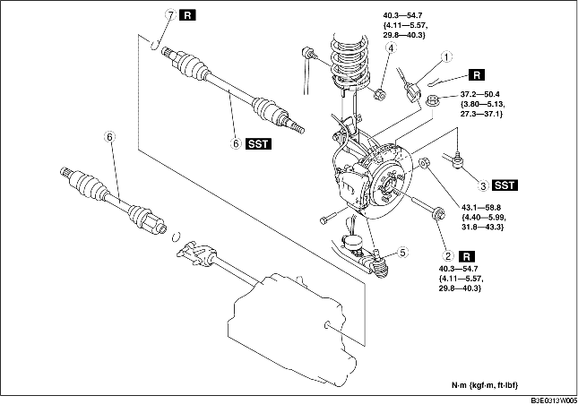

1. Drain the transaxle oil. (See TRANSAXLE OIL REPLACEMENT [F35M-R].) (See AUTOMATIC TRANSAXLE FLUID (ATF) REPLACEMENT.)
2. Remove in the order indicated in the table.
3. Install in the reverse order of removal.

.
|
1
|
ABS wheel-speed sensor connector
|
|
2
|
Lockbolt
|
|
3
|
Tie-rod end ball joint
|
|
4
|
Stabilizer control link upper nut
|
|
5
|
Front lower arm ball joint
|
|
6
|
Drive shaft
(See Drive Shaft Removal Note.)
|
|
7
|
Clip
(See Clip Installation Note.)
|
1. Install a spare bolt onto the drive shaft.
2. Tap the bolt with a copper hammer and separate the drive shaft from the axle.
3. Separate the drive shaft from the wheel hub.
4. Separate the drive shaft (LH) from the transaxle by prying with a bar inserted between the outer ring and the transaxle.
5. Disconnect the drive shaft (RH) from the joint shaft by tapping the transaxle side outer ring with a brass bar and hammer.
6. Install the SSTs to the transaxle after the drive shaft is removed.
1. Install a new drive shaft clip to the clip groove at the end of the drive shaft with the clip opening facing upward and the clip width within the specification.
2. After installation, measure the outer diameter.
1. Insert the drive shaft into the wheel hub.
2. Apply transaxle oil to the oil seal lip.
3. Install the drive shaft to the transaxle.
4. After installation, pull the transaxle side outer ring forward to confirm that the drive shaft is securely held by the clip.
1. Install a new clip onto the joint shaft. (See JOINT SHAFT REMOVAL/INSTALLATION.)
2. Insert the drive shaft to the wheel hub.
3. Insert the drive shaft to the joint shaft.
4. After installation, pull the transaxle side outer ring forward to confirm that the drive shaft is securely held by the clip.